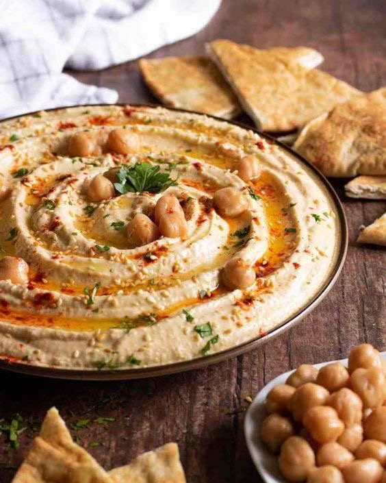
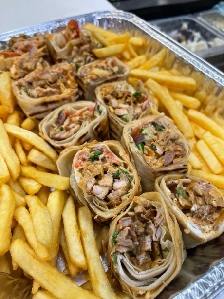
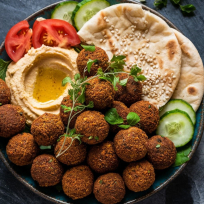

Arabisches Essen – Eine kulinarische Reise
Die arabische Küche ist reich an Gewürzen, Farben und Geschichten. Sie spiegelt die Vielfalt und Traditionen des Nahen Ostens wider.
Hummus
Ein cremiger Dip aus Kichererbsen, Tahini und Olivenöl – perfekt zu Fladenbrot.
Fun Fact: In einigen Regionen wird Hummus sogar zum Frühstück gegessen!
Zutaten:
- 1 Dose Kichererbsen
- 2 EL Tahini
- 1 Zitrone
- 1 Knoblauchzehe
- Olivenöl
Zubereitung:
Alle Zutaten in einem Mixer glatt pürieren und mit Olivenöl servieren.
Shawarma
Würzig mariniertes Fleisch vom Grill, traditionell im Fladenbrot serviert.
Fun Fact: Shawarma ist das arabische Pendant zum Döner Kebab.
Zutaten:
- 500g Hähnchenfleisch
- Joghurt, Knoblauch, Zitronensaft, Gewürze
- Fladenbrot
Zubereitung:
Marinieren, grillen, aufschneiden und im Brot mit Gemüse servieren.
Falafel
Kichererbsenbällchen, außen knusprig, innen weich. Ein veganer Klassiker!
Fun Fact: Falafel stammt ursprünglich aus Ägypten!
Zutaten:
- 250g getrocknete Kichererbsen
- Zwiebel, Knoblauch, Petersilie, Koriander
- Gewürze, Backpulver
Zubereitung:
Kichererbsen einweichen, mixen, formen und frittieren.
Herkunft & Geschichte
Diese Gerichte stammen aus verschiedenen Regionen der arabischen Welt – vom Libanon über Palästina bis Ägypten. Oft sind sie Teil von Familienfesten und religiösen Feiern.